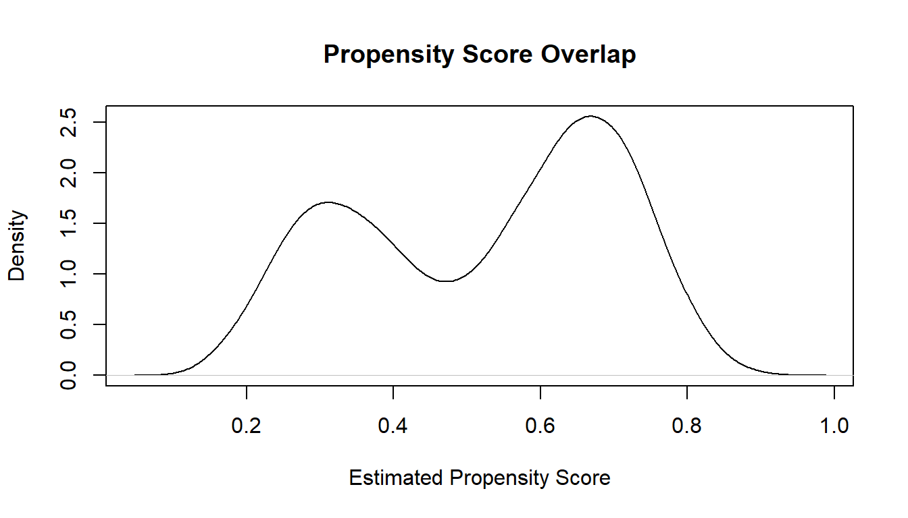

4Chapter 1.3: From Causal Questions to Analysis: Identification, Estimands, and Statistical Models
In this chapter, we connect the causal estimand, the quantity that answers our scientific question, to a statistical estimand, which is something we can estimate from observed data. This is the crucial middle step of the Causal Roadmap: translating what we want to know into what we can learn from the dataset at hand.
We will walk carefully through: - Identification: when causal effects are estimable from data - Statistical estimands: mapping causal parameters to observable quantities - Positivity, consistency, and exchangeability in practice - Why regression coefficients are not causal effects (see Chapter 1.1 for the full treatment) - How to compute identified estimands using real R code
4.1 Why this chapter matters: the hormone therapy paradox
A classic reason epidemiologists care so much about identification is the hormone therapy paradox. For years, observational studies suggested that postmenopausal hormone therapy appeared protective against coronary heart disease. The association looked reassuring and even clinically plausible. But later randomized trial evidence did not support the same simple protective interpretation.
What went wrong? The key lesson is not that observational data are useless. The lesson is that an observed association is not automatically the causal effect we want. Women who initiated hormone therapy often differed from nonusers in ways that also predicted cardiovascular risk. They may have had different healthcare access, preventive care, health behaviors, socioeconomic resources, or baseline risk profiles. Once that possibility is on the table, the question becomes:
Did the observed comparison identify the causal effect, or did it identify only an association shaped by confounding and selection?
That is the central job of this chapter. Before we estimate anything, we need to know whether our causal estimand can be linked to the observed data under assumptions we are willing to defend. The hormone therapy story is a reminder that strong methods begin before modeling, at the stage of defining the estimand, defending exchangeability, and checking whether identification is even plausible.
The following simulation makes this concrete. A single binary confounder is enough to make a crude comparison misleading, while g-computation (which implements the identification formula) recovers the true causal effect.
set.seed(42)n <-2000W <-rbinom(n, 1, 0.5) # confounder: e.g., prior CVDA <-rbinom(n, 1, plogis(-0.5+1.5* W)) # treatment depends on WY <-rbinom(n, 1, plogis(-2+0.3* A +1.5* W)) # true causal effect of A is modest# Crude comparison (confounded)crude_rd <-mean(Y[A ==1]) -mean(Y[A ==0])# G-computation (adjusting for W)mod <-glm(Y ~ A + W, family = binomial)p1 <-predict(mod, newdata =data.frame(A =1, W = W), type ="response")p0 <-predict(mod, newdata =data.frame(A =0, W = W), type ="response")gcomp_ate <-mean(p1 - p0)cat("Crude risk difference (confounded):", round(crude_rd, 3), "\n")
Crude risk difference (confounded): 0.133
cat("G-computation ATE (adjusted): ", round(gcomp_ate, 3), "\n")
G-computation ATE (adjusted): 0.051
The crude estimate overstates the effect because people with prior CVD (W = 1) are more likely to receive treatment and more likely to have the outcome. G-computation breaks this confounding by standardizing over W.
Learning objectives
Define identification and explain why it is necessary before estimation
State the three core identification assumptions: consistency, exchangeability, and positivity
Distinguish a causal estimand (defined via potential outcomes) from a statistical estimand (a function of the observed-data distribution)
Derive the g-computation identification formula from the assumptions
Recognize when identification fails and what alternative strategies exist (sensitivity analysis, bounding, instrumental variables)
Causal conclusions require identification assumptions and diagnostic evidence that the data support the target estimand.
5 1. What Does It Mean to Identify a Causal Effect?
Definition: Identification
Identification is the logical argument that, under stated assumptions, an unobservable causal quantity equals something we can compute from observed data. A causal estimand (e.g., ATE = E[Y(1) - Y(0)]) is defined via potential outcomes we never fully observe. Identification asks: can we express this causal quantity entirely in terms of the observed-data distribution? If yes, the effect is identified; if no, additional assumptions or data are needed.
The three key assumptions required for identification are:
This chapter is the canonical reference for these three assumptions. Later chapters will refer back here rather than re-derive them.
Assumption 1: Consistency, “You Get What You Get”
The observed outcome equals the counterfactual outcome under the treatment actually received:
\[
Y = Y(A)
\]
In practice, this means the treatment is well-defined and there is only one version of it. If someone took denosumab, their observed outcome equals their potential outcome under denosumab. If they took ZA, their observed outcome equals their potential outcome under ZA. Consistency can break down when “treatment” is vague (e.g., “exercise more”) or when the drug formulation, dose, or route of administration varies across patients in ways that matter for the outcome.
Assumption 2: Exchangeability, the Hardest Assumption to Defend
Formally:
\[
Y(a) \perp A \mid W
\]
This is the assumption that there are no unmeasured confounders. After adjusting for the measured covariates \(W\), the treated and untreated groups are comparable, as if treatment had been randomly assigned within strata of \(W\).
In a randomized trial, randomization guarantees exchangeability by design.
In observational data, we must assume it holds, and this assumption is untestable from the data alone.
This is typically the most difficult assumption to defend in applied epidemiology. If there are unmeasured factors (e.g., frailty, physician preference, disease severity scores not in the data) that influence both treatment and outcome, identification fails. Always use a DAG to reason about which variables are sufficient to block all backdoor paths, and conduct sensitivity analyses (e.g., E-values) to assess how robust your conclusions are to potential unmeasured confounding.
Assumption 3: Positivity, Watch for Practical Violations
Everyone has a positive probability of receiving either treatment at each level of covariates:
\[
0 < P(A=a \mid W=w) < 1
\]
Practical positivity violations are extremely common in real-world observational data and deserve careful attention:
Structural violations: Some covariate strata never receive a particular treatment by clinical convention (e.g., patients over age 90 may never be prescribed aggressive chemotherapy). No statistical method can fix this. The causal effect is simply not defined in those strata.
Random violations: Some strata have very few patients receiving one treatment, leading to near-zero propensity scores. This causes extreme inverse-probability weights and unstable estimates.
Signs to look for: propensity scores piling up near 0 or 1, very large IPTW weights, and g-computation predictions extrapolating far outside the support of the data. We will practice diagnosing this with R shortly.
6 2. The Identification Formula
The Key Insight: Replacing Counterfactuals with Observables
Under the three assumptions, unobservable counterfactuals become observable conditional expectations:
This is the foundation for g-computation, IPTW, AIPW, and TMLE.
7 3. The Statistical Estimand
Definition: Causal Estimand vs. Statistical Estimand
A causal estimand is defined via potential outcomes (e.g., 3-year MI risk difference if all patients received denosumab vs. ZA). A statistical estimand is the function of the observed-data distribution that equals the causal estimand under the identification assumptions (e.g., the standardized mean difference from a model of \(P(Y \mid A, W)\)).
Pitfall. Regression coefficients (e.g., log-odds ratios) are not the statistical estimand for the ATE. They are conditional measures on the log-odds scale, not marginal risk differences.
8 4. Example: Identification in a Simulated Osteoporosis Cohort
We walk through a reproducible R example to illustrate the identification step.
set.seed(2025)n <-5000age <-rnorm(n, 75, 6)cvd <-rbinom(n, 1, plogis(0.1* (age -70)))# Treatment assignment with confoundingA <-rbinom(n, 1, plogis(-1+0.07* (age -70) +1.2* cvd))# Potential outcomes generated under each treatmentrisk <-plogis(-2+0.5*A +0.08*(age -70) +0.9*cvd)Y <-rbinom(n, 1, risk)dat <-data.frame(age, cvd, A, Y)
9 5. Step-by-Step Identification Using G-Computation
9.0.1 5.1 Fit an outcome regression
mod <-glm(Y ~ A + age + cvd, family = binomial, data = dat)
9.0.2 5.2 Predict counterfactual outcomes
dat1 <-transform(dat, A =1)dat0 <-transform(dat, A =0)p1 <-predict(mod, newdata = dat1, type ="response")p0 <-predict(mod, newdata = dat0, type ="response")
The number printed above is the average treatment effect on the risk-difference scale. It estimates how much the probability of MI would change, on average, if every patient in the study population were given denosumab (\(A=1\)) compared to a world where every patient received ZA (\(A=0\)). A positive value means denosumab is associated with higher MI risk after adjusting for age and CVD history; a negative value means lower risk. Because this is a standardized (marginal) estimate averaged over the real covariate distribution, it has a direct public-health interpretation, unlike a conditional odds ratio from a logistic regression.
10 6. Diagnosing Exchangeability and Positivity
10.1 6.1 Overlap check
Diagnosing Positivity Violations in Practice
The propensity score plot below is your primary diagnostic. Look for:
Mass piling up near 0 or 1: Some patients have near-certain probability of receiving (or not receiving) treatment. The data contain little information about what would happen under the other treatment.
Poor overlap between groups: If the propensity score distributions for \(A=1\) and \(A=0\) lack common support, causal estimates in the non-overlapping region rely on extrapolation.
When you see these patterns, consider restricting to the region of common support, trimming extreme weights, or acknowledging the limitations.
plot(density(predict(glm(A ~ age + cvd, family = binomial, data = dat), type ="response")),main ="Propensity Score Overlap", xlab ="Estimated Propensity Score")

ps <-predict(glm(A ~ age + cvd, family = binomial, data = dat), type ="response")
11 7. Interpretability: Why the Roadmap Matters
Key point. The Causal Roadmap keeps your analysis honest. Without explicit identification, analysts may report non-causal associations as causal effects, sensitivity analyses are impossible because assumptions were never stated, and regulatory decisions become less defensible. With identification, the causal effect has an unambiguous interpretation tied to a well-defined intervention, assumptions are transparent and can be interrogated by reviewers, and statistical methods are chosen because they target the identified estimand, not out of convenience.
12 8. Summary
Chapter Takeaways
Identification bridges potential outcomes (causal) to observable quantities (statistical) via three assumptions: consistency, exchangeability, and positivity.
A statistical estimand is not a regression coefficient. It is the observed-data function that equals the causal estimand under the identification assumptions.
G-computation implements the identification formula: model, predict under each treatment, average.
12.1 Check your understanding
Q1. If you have perfect covariate balance between treated and untreated groups, does that prove exchangeability holds?
No. Covariate balance on measured covariates is necessary but not sufficient for exchangeability. Exchangeability requires that there are no unmeasured common causes of treatment and outcome, a condition that cannot be verified from the data alone. You could have perfect balance on every variable in your dataset while an unmeasured confounder (e.g., frailty, physician preference, or disease severity not captured in the data) still biases the estimate. Balance checks are useful diagnostics, but they cannot substitute for substantive knowledge and a well-reasoned DAG.
Q2. A colleague runs a logistic regression and reports the coefficient on treatment as “the causal effect.” What is wrong with this interpretation?
A logistic regression coefficient is a conditional log-odds ratio. It describes the association between treatment and outcome holding covariates fixed at specific values. This is not a causal effect for at least two reasons. First, a coefficient from a regression model is only a causal effect if the identification assumptions (consistency, exchangeability, positivity) hold and the model is correctly specified. Simply running a regression does not guarantee either. Second, the conditional log-odds ratio is a different quantity from the marginal risk difference (ATE) that typically answers the scientific question. The log-odds ratio is non-collapsible: its value changes depending on which covariates are conditioned on, even absent confounding. To obtain a causal estimate on a meaningful scale, you need to go through the identification step and apply a method like g-computation that standardizes over the population. See Chapter 1.1 for a detailed demonstration of this distinction.
Q3. What is a positivity violation, and what should you do when you encounter one?
A positivity violation occurs when certain covariate strata have zero (or near-zero) probability of receiving one of the treatment levels. Structural violations arise when some patients are never treated by clinical convention (e.g., very elderly patients never receiving aggressive chemotherapy). The causal effect is simply not defined in those strata, and no statistical method can fix this. Practical (random) violations occur when some strata have very few patients on one treatment, leading to propensity scores near 0 or 1 and unstable estimates. When you encounter positivity violations, you should: (1) inspect propensity score distributions for mass near the boundaries, (2) consider restricting the target population to the region of overlap where the effect is well-defined, (3) use weight trimming or stabilized weights if using IPTW, and (4) be transparent about the limitations and the population to which your estimate applies.
12.2 What comes next
Before moving to estimation, the next chapter introduces target trial emulation: the discipline of designing every observational analysis as if it were a randomized trial. Target trial thinking prevents common biases (immortal time bias, misaligned time zero, vague comparators) and connects the causal roadmap directly to real-world evidence practice. After that, Part II turns to estimation methods.
12.3 Sources and further reading
Hernan MA, Robins JM (2020). Causal Inference: What If. Chapters 1-3. Free online
Pearl J (2009). Causality: Models, Reasoning, and Inference. 2nd ed. Cambridge University Press.
Robins JM (1986). A new approach to causal inference in mortality studies with sustained exposure periods. Mathematical Modelling 7:1393-1512.
van der Laan MJ, Rose S (2011). Targeted Learning. Springer. Chapter 2.
Petersen ML, van der Laan MJ (2014). Causal models and learning from data. Epidemiology 25(3):418-426.
Kennedy EH (2019). Nonparametric causal effects based on incremental propensity score interventions. JASA 114(526):645-656.
This example estimates the effect of a modified treatment policy (a stochastic intervention that shifts treatment probability) using the lmtp package. This connects directly to the identification results in this chapter: rather than asking “what if everyone were treated?”, we ask “what if each person’s probability of treatment increased?”
Simulate panel data with a single time point
Use lmtp_tmle() to estimate the effect of shifting the treatment mechanism
Falls back to tmle for a standard ATE if lmtp is unavailable
set.seed(1)n <-500W1 <-rnorm(n)W2 <-rbinom(n, 1, 0.5)A <-rbinom(n, 1, plogis(-0.3+0.5* W1))Y <-as.numeric(rbinom(n, 1, plogis(-1+0.8* A +0.6* W1 +0.3* W2)))if (requireNamespace("lmtp", quietly =TRUE)) {library(lmtp) dat <-data.frame(W1 = W1, W2 = W2, A = A, Y = Y)## Modified treatment policy: shift everyone to A = 1 result <-lmtp_tmle(data = dat,trt ="A",outcome ="Y",baseline =c("W1", "W2"),shift =function(data, trt) rep(1, nrow(data)),outcome_type ="binomial",learners_outcome ="SL.glm",learners_trt ="SL.glm",folds =5 )print(result)} elseif (requireNamespace("tmle", quietly =TRUE)) {message("lmtp not available; falling back to tmle for a standard ATE.")library(tmle) fit <-tmle(Y = Y, A = A, W =data.frame(W1, W2),Q.SL.library ="SL.glm", g.SL.library ="SL.glm")cat("ATE:", round(fit$estimates$ATE$psi, 3), "\n")cat("95% CI:", round(fit$estimates$ATE$CI, 3), "\n")} else {message("Install 'lmtp' or 'tmle': install.packages('lmtp') install.packages('tmle')")}
Source Code
---title: "Chapter 1.3: From Causal Questions to Analysis: Identification, Estimands, and Statistical Models"format: html---In this chapter, we connect the **causal estimand**, the quantity that answers our scientific question, to a **statistical estimand**, which is something we can estimate from observed data. This is the crucial middle step of the Causal Roadmap: translating what we *want* to know into what we *can* learn from the dataset at hand.We will walk carefully through:- Identification: when causal effects are estimable from data- Statistical estimands: mapping causal parameters to observable quantities- Positivity, consistency, and exchangeability in practice- Why regression coefficients are *not* causal effects (see Chapter 1.1 for the full treatment)- How to compute identified estimands using real R code## Why this chapter matters: the hormone therapy paradoxA classic reason epidemiologists care so much about identification is the **hormone therapy paradox**. For years, observational studies suggested that postmenopausal hormone therapy appeared protective against coronary heart disease. The association looked reassuring and even clinically plausible. But later randomized trial evidence did not support the same simple protective interpretation.What went wrong? The key lesson is not that observational data are useless. The lesson is that an observed association is not automatically the causal effect we want. Women who initiated hormone therapy often differed from nonusers in ways that also predicted cardiovascular risk. They may have had different healthcare access, preventive care, health behaviors, socioeconomic resources, or baseline risk profiles. Once that possibility is on the table, the question becomes:> Did the observed comparison identify the causal effect, or did it identify only an association shaped by confounding and selection?That is the central job of this chapter. Before we estimate anything, we need to know whether our causal estimand can be linked to the observed data under assumptions we are willing to defend. The hormone therapy story is a reminder that strong methods begin **before** modeling, at the stage of defining the estimand, defending exchangeability, and checking whether identification is even plausible.The following simulation makes this concrete. A single binary confounder is enough to make a crude comparison misleading, while g-computation (which implements the identification formula) recovers the true causal effect.```{r}set.seed(42)n <-2000W <-rbinom(n, 1, 0.5) # confounder: e.g., prior CVDA <-rbinom(n, 1, plogis(-0.5+1.5* W)) # treatment depends on WY <-rbinom(n, 1, plogis(-2+0.3* A +1.5* W)) # true causal effect of A is modest# Crude comparison (confounded)crude_rd <-mean(Y[A ==1]) -mean(Y[A ==0])# G-computation (adjusting for W)mod <-glm(Y ~ A + W, family = binomial)p1 <-predict(mod, newdata =data.frame(A =1, W = W), type ="response")p0 <-predict(mod, newdata =data.frame(A =0, W = W), type ="response")gcomp_ate <-mean(p1 - p0)cat("Crude risk difference (confounded):", round(crude_rd, 3), "\n")cat("G-computation ATE (adjusted): ", round(gcomp_ate, 3), "\n")```The crude estimate overstates the effect because people with prior CVD (W = 1) are more likely to receive treatment *and* more likely to have the outcome. G-computation breaks this confounding by standardizing over W.::: {.callout-note}## Learning objectives- Define identification and explain why it is necessary before estimation- State the three core identification assumptions: consistency, exchangeability, and positivity- Distinguish a causal estimand (defined via potential outcomes) from a statistical estimand (a function of the observed-data distribution)- Derive the g-computation identification formula from the assumptions- Recognize when identification fails and what alternative strategies exist (sensitivity analysis, bounding, instrumental variables):::*Causal conclusions require identification assumptions and diagnostic evidence that the data support the target estimand.*```{r}#| include: falseknitr::opts_chunk$set(collapse =TRUE,comment ="#>",fig.width =7,fig.height =4,fig.align ="center",message =FALSE,warning =FALSE)```# 1. What Does It Mean to *Identify* a Causal Effect?:::{.callout-note}## Definition: Identification**Identification** is the logical argument that, under stated assumptions, an unobservable causal quantity equals something we *can* compute from observed data. A causal estimand (e.g., ATE = E[Y(1) - Y(0)]) is defined via **potential outcomes** we never fully observe. Identification asks: can we express this causal quantity entirely in terms of the observed-data distribution? If yes, the effect is **identified**; if no, additional assumptions or data are needed.:::The three key assumptions required for identification are:This chapter is the **canonical reference** for these three assumptions. Later chapters will refer back here rather than re-derive them.:::{.callout-note}## Assumption 1: Consistency, "You Get What You Get"The observed outcome equals the counterfactual outcome under the treatment actually received:$$Y = Y(A)$$In practice, this means the treatment is **well-defined** and there is only one version of it. If someone took denosumab, their observed outcome equals their potential outcome under denosumab. If they took ZA, their observed outcome equals their potential outcome under ZA. Consistency can break down when "treatment" is vague (e.g., "exercise more") or when the drug formulation, dose, or route of administration varies across patients in ways that matter for the outcome.::::::{.callout-warning}## Assumption 2: Exchangeability, the Hardest Assumption to DefendFormally:$$Y(a) \perp A \mid W$$This is the assumption that **there are no unmeasured confounders**. After adjusting for the measured covariates $W$, the treated and untreated groups are comparable, as if treatment had been randomly assigned within strata of $W$.- In a randomized trial, randomization guarantees exchangeability by design.- In observational data, we must **assume** it holds, and this assumption is **untestable** from the data alone.This is typically the most difficult assumption to defend in applied epidemiology. If there are unmeasured factors (e.g., frailty, physician preference, disease severity scores not in the data) that influence both treatment and outcome, identification fails. Always use a DAG to reason about which variables are sufficient to block all backdoor paths, and conduct sensitivity analyses (e.g., E-values) to assess how robust your conclusions are to potential unmeasured confounding.::::::{.callout-warning}## Assumption 3: Positivity, Watch for Practical ViolationsEveryone has a *positive probability* of receiving either treatment at each level of covariates:$$0 < P(A=a \mid W=w) < 1$$**Practical positivity violations** are extremely common in real-world observational data and deserve careful attention:- **Structural violations**: Some covariate strata *never* receive a particular treatment by clinical convention (e.g., patients over age 90 may never be prescribed aggressive chemotherapy). No statistical method can fix this. The causal effect is simply not defined in those strata.- **Random violations**: Some strata have very few patients receiving one treatment, leading to near-zero propensity scores. This causes extreme inverse-probability weights and unstable estimates.Signs to look for: propensity scores piling up near 0 or 1, very large IPTW weights, and g-computation predictions extrapolating far outside the support of the data. We will practice diagnosing this with R shortly.:::# 2. The Identification Formula:::{.callout-tip}## The Key Insight: Replacing Counterfactuals with ObservablesUnder the three assumptions, unobservable counterfactuals become observable conditional expectations:$$E[Y(1) - Y(0)]=E_W\!\left[E[Y \mid A=1, W]-E[Y \mid A=0, W]\right]$$This is the foundation for **g-computation**, **IPTW**, **AIPW**, and **TMLE**.:::# 3. The Statistical Estimand:::{.callout-note}## Definition: Causal Estimand vs. Statistical EstimandA **causal estimand** is defined via potential outcomes (e.g., 3-year MI risk difference if all patients received denosumab vs. ZA). A **statistical estimand** is the function of the observed-data distribution that equals the causal estimand *under the identification assumptions* (e.g., the standardized mean difference from a model of $P(Y \mid A, W)$).**Pitfall.** Regression coefficients (e.g., log-odds ratios) are **not** the statistical estimand for the ATE. They are conditional measures on the log-odds scale, not marginal risk differences.:::# 4. Example: Identification in a Simulated Osteoporosis CohortWe walk through a reproducible R example to illustrate the identification step.```{r}set.seed(2025)n <-5000age <-rnorm(n, 75, 6)cvd <-rbinom(n, 1, plogis(0.1* (age -70)))# Treatment assignment with confoundingA <-rbinom(n, 1, plogis(-1+0.07* (age -70) +1.2* cvd))# Potential outcomes generated under each treatmentrisk <-plogis(-2+0.5*A +0.08*(age -70) +0.9*cvd)Y <-rbinom(n, 1, risk)dat <-data.frame(age, cvd, A, Y)```# 5. Step-by-Step Identification Using G-Computation### 5.1 Fit an outcome regression```{r}mod <-glm(Y ~ A + age + cvd, family = binomial, data = dat)```### 5.2 Predict counterfactual outcomes```{r}dat1 <-transform(dat, A =1)dat0 <-transform(dat, A =0)p1 <-predict(mod, newdata = dat1, type ="response")p0 <-predict(mod, newdata = dat0, type ="response")```### 5.3 Compute the standardized ATE```{r}ate_gcomp <-mean(p1 - p0)ate_gcomp```:::{.callout-tip}## Interpreting the G-Computation ATEThe number printed above is the **average treatment effect on the risk-difference scale**. It estimates how much the probability of MI would change, on average, if every patient in the study population were given denosumab ($A=1$) compared to a world where every patient received ZA ($A=0$). A positive value means denosumab is associated with *higher* MI risk after adjusting for age and CVD history; a negative value means *lower* risk. Because this is a standardized (marginal) estimate averaged over the real covariate distribution, it has a direct public-health interpretation, unlike a conditional odds ratio from a logistic regression.:::# 6. Diagnosing Exchangeability and Positivity## 6.1 Overlap check:::{.callout-important}## Diagnosing Positivity Violations in PracticeThe propensity score plot below is your primary diagnostic. Look for:- **Mass piling up near 0 or 1**: Some patients have near-certain probability of receiving (or not receiving) treatment. The data contain little information about what would happen under the other treatment.- **Poor overlap between groups**: If the propensity score distributions for $A=1$ and $A=0$ lack common support, causal estimates in the non-overlapping region rely on extrapolation.When you see these patterns, consider restricting to the region of common support, trimming extreme weights, or acknowledging the limitations.:::```{r}plot(density(predict(glm(A ~ age + cvd, family = binomial, data = dat), type ="response")),main ="Propensity Score Overlap", xlab ="Estimated Propensity Score")ps <-predict(glm(A ~ age + cvd, family = binomial, data = dat), type ="response")```# 7. Interpretability: Why the Roadmap Matters**Key point.** The Causal Roadmap keeps your analysis honest. Without explicit identification, analysts may report non-causal associations as causal effects, sensitivity analyses are impossible because assumptions were never stated, and regulatory decisions become less defensible. With identification, the causal effect has an unambiguous interpretation tied to a well-defined intervention, assumptions are transparent and can be interrogated by reviewers, and statistical methods are chosen *because they target the identified estimand*, not out of convenience.# 8. Summary:::{.callout-tip}## Chapter Takeaways- Identification bridges **potential outcomes** (causal) to **observable quantities** (statistical) via three assumptions: consistency, exchangeability, and positivity.- A statistical estimand is not a regression coefficient. It is the observed-data function that equals the causal estimand under the identification assumptions.- **G-computation** implements the identification formula: model, predict under each treatment, average.:::## Check your understanding<details><summary><strong>Q1. If you have perfect covariate balance between treated and untreated groups, does that prove exchangeability holds?</strong></summary>No. Covariate balance on *measured* covariates is necessary but not sufficient for exchangeability. Exchangeability requires that there are no unmeasured common causes of treatment and outcome, a condition that cannot be verified from the data alone. You could have perfect balance on every variable in your dataset while an unmeasured confounder (e.g., frailty, physician preference, or disease severity not captured in the data) still biases the estimate. Balance checks are useful diagnostics, but they cannot substitute for substantive knowledge and a well-reasoned DAG.</details><details><summary><strong>Q2. A colleague runs a logistic regression and reports the coefficient on treatment as "the causal effect." What is wrong with this interpretation?</strong></summary>A logistic regression coefficient is a *conditional log-odds ratio*. It describes the association between treatment and outcome holding covariates fixed at specific values. This is not a causal effect for at least two reasons. First, a coefficient from a regression model is only a causal effect if the identification assumptions (consistency, exchangeability, positivity) hold *and* the model is correctly specified. Simply running a regression does not guarantee either. Second, the conditional log-odds ratio is a different quantity from the marginal risk difference (ATE) that typically answers the scientific question. The log-odds ratio is non-collapsible: its value changes depending on which covariates are conditioned on, even absent confounding. To obtain a causal estimate on a meaningful scale, you need to go through the identification step and apply a method like g-computation that standardizes over the population. See Chapter 1.1 for a detailed demonstration of this distinction.</details><details><summary><strong>Q3. What is a positivity violation, and what should you do when you encounter one?</strong></summary>A positivity violation occurs when certain covariate strata have zero (or near-zero) probability of receiving one of the treatment levels. **Structural violations** arise when some patients are never treated by clinical convention (e.g., very elderly patients never receiving aggressive chemotherapy). The causal effect is simply not defined in those strata, and no statistical method can fix this. **Practical (random) violations** occur when some strata have very few patients on one treatment, leading to propensity scores near 0 or 1 and unstable estimates. When you encounter positivity violations, you should: (1) inspect propensity score distributions for mass near the boundaries, (2) consider restricting the target population to the region of overlap where the effect is well-defined, (3) use weight trimming or stabilized weights if using IPTW, and (4) be transparent about the limitations and the population to which your estimate applies.</details>## What comes nextBefore moving to estimation, the next chapter introduces **target trial emulation**: the discipline of designing every observational analysis as if it were a randomized trial. Target trial thinking prevents common biases (immortal time bias, misaligned time zero, vague comparators) and connects the causal roadmap directly to real-world evidence practice. After that, Part II turns to estimation methods.## Sources and further reading- Hernan MA, Robins JM (2020). *Causal Inference: What If*. Chapters 1-3. [Free online](https://www.hsph.harvard.edu/miguel-hernan/causal-inference-book/)- Pearl J (2009). *Causality: Models, Reasoning, and Inference*. 2nd ed. Cambridge University Press.- Robins JM (1986). A new approach to causal inference in mortality studies with sustained exposure periods. *Mathematical Modelling* 7:1393-1512.- van der Laan MJ, Rose S (2011). *Targeted Learning*. Springer. Chapter 2.- Petersen ML, van der Laan MJ (2014). Causal models and learning from data. *Epidemiology* 25(3):418-426.- Kennedy EH (2019). Nonparametric causal effects based on incremental propensity score interventions. *JASA* 114(526):645-656.- `lmtp` R package: [CRAN](https://cran.r-project.org/package=lmtp)- `tmle` R package: [CRAN](https://cran.r-project.org/package=tmle)## Software Implementation (R)This example estimates the effect of a **modified treatment policy** (a stochastic intervention that shifts treatment probability) using the `lmtp` package. This connects directly to the identification results in this chapter: rather than asking "what if everyone were treated?", we ask "what if each person's probability of treatment increased?"- Simulate panel data with a single time point- Use `lmtp_tmle()` to estimate the effect of shifting the treatment mechanism- Falls back to `tmle` for a standard ATE if `lmtp` is unavailable```{r}#| eval: falseset.seed(1)n <-500W1 <-rnorm(n)W2 <-rbinom(n, 1, 0.5)A <-rbinom(n, 1, plogis(-0.3+0.5* W1))Y <-as.numeric(rbinom(n, 1, plogis(-1+0.8* A +0.6* W1 +0.3* W2)))if (requireNamespace("lmtp", quietly =TRUE)) {library(lmtp) dat <-data.frame(W1 = W1, W2 = W2, A = A, Y = Y)## Modified treatment policy: shift everyone to A = 1 result <-lmtp_tmle(data = dat,trt ="A",outcome ="Y",baseline =c("W1", "W2"),shift =function(data, trt) rep(1, nrow(data)),outcome_type ="binomial",learners_outcome ="SL.glm",learners_trt ="SL.glm",folds =5 )print(result)} elseif (requireNamespace("tmle", quietly =TRUE)) {message("lmtp not available; falling back to tmle for a standard ATE.")library(tmle) fit <-tmle(Y = Y, A = A, W =data.frame(W1, W2),Q.SL.library ="SL.glm", g.SL.library ="SL.glm")cat("ATE:", round(fit$estimates$ATE$psi, 3), "\n")cat("95% CI:", round(fit$estimates$ATE$CI, 3), "\n")} else {message("Install 'lmtp' or 'tmle': install.packages('lmtp') install.packages('tmle')")}```